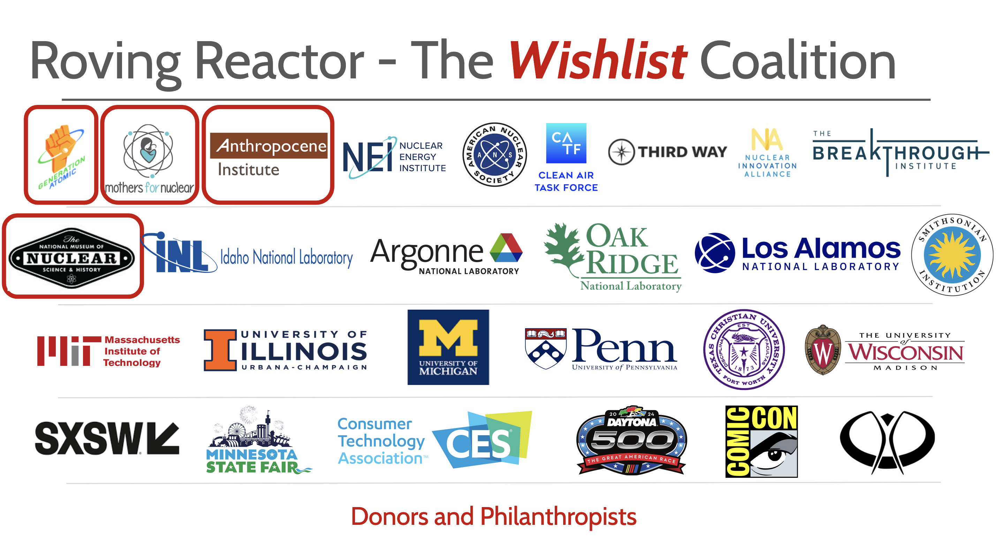

The Roving Reactor Project is steadily building a coalition that includes advocacy groups, government agencies (especially the national labs), academia, and industry. Our approach is both sequential and strategic: first establishing strong relationships with advocacy groups, followed by connections with national labs, academia, and finally industry partners. This staged approach builds credibility at each step and aligns the coalition around shared goals.
The strategy has already been a success. We've developed close ties with key advocacy groups and received generous grants from three: Generation Atomic, Mothers for Nuclear, and the Anthropocene Institute, as well as an artist residency from the National Museum of Nuclear Science and History.
Our advisory board now includes a diverse and respected group of leaders from various sectors who provide invaluable guidance to the project.
Steve Moore is an artist from Austin, Texas where he runs Physical Plant Arts. Now in its 30th year, the company's work has been featured in the New York Times, American Theatre Magazine, Variety, and elsewhere. Along the way, Steve spent 10 years at IBM, first as a Senior Technical Writer and eventually as the company’s Story Strategist. In 2020, he joined the creative team at the Sphere in Las Vegas.
Most recently, Steve served as Director of Communications at a catastrophe modeling firm, focused on the impacts of climate change. Inspired by that work, Steve launched an artistic project designed to shine a light on the large and diverse community of people fighting to address the climate crisis – mostly behind the scenes.
What unites the work is a passion for creating and fostering community using the tools of art and conversation – with a special focus on the sense of community that arises when people come together to solve complex problems.